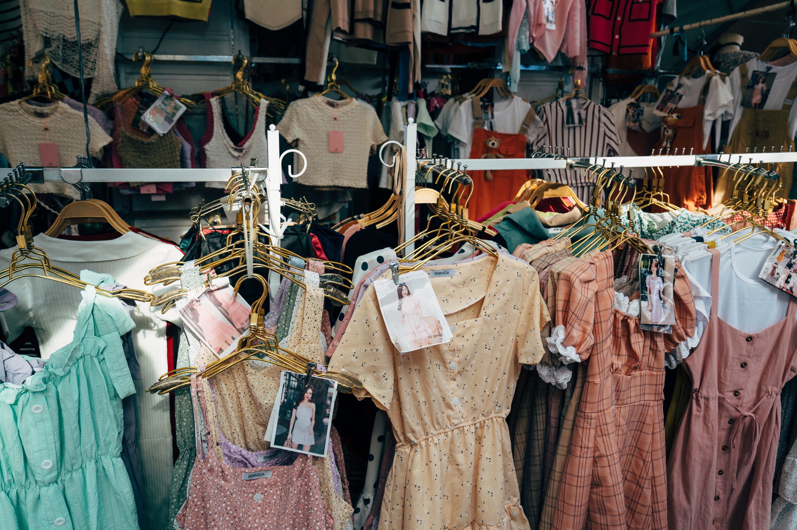

OOTDThe Outfits I'm Loving
Knit sweater + midi skirt + boots = the easiest fall recipe.
Read More →👗 Soft girl wardrobe diaries
Outfits, thrift finds & style notes
A little lookbook of the outfits I love, the pieces I thrifted, and the styles that make me feel most like myself. Cozy, soft, and always a little romantic.

OOTDKnit sweater + midi skirt + boots = the easiest fall recipe.
Read More →"Style is a way to say who you are without having to speak." — Rachel Zoe